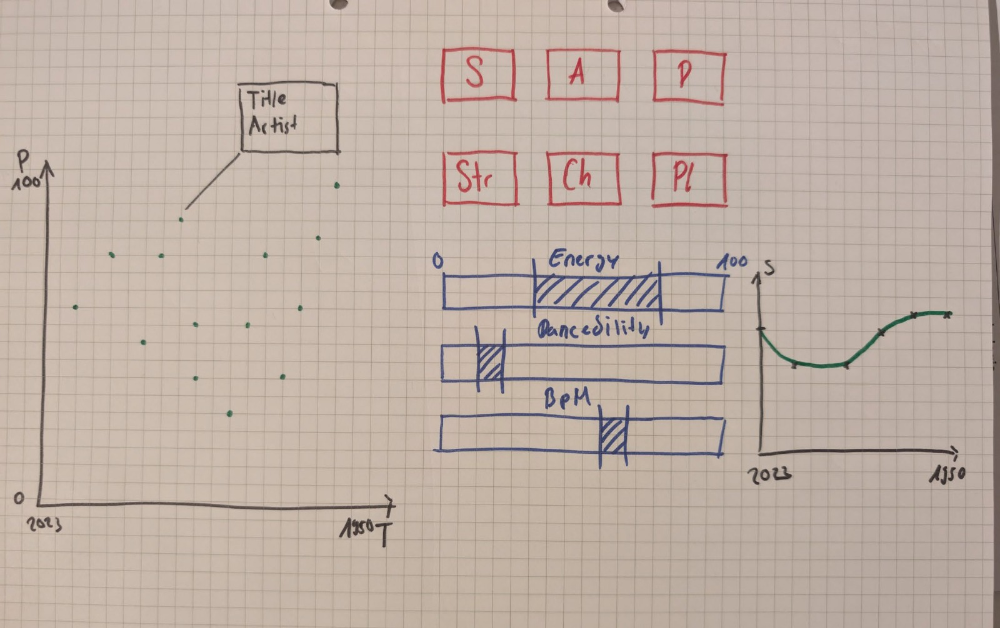
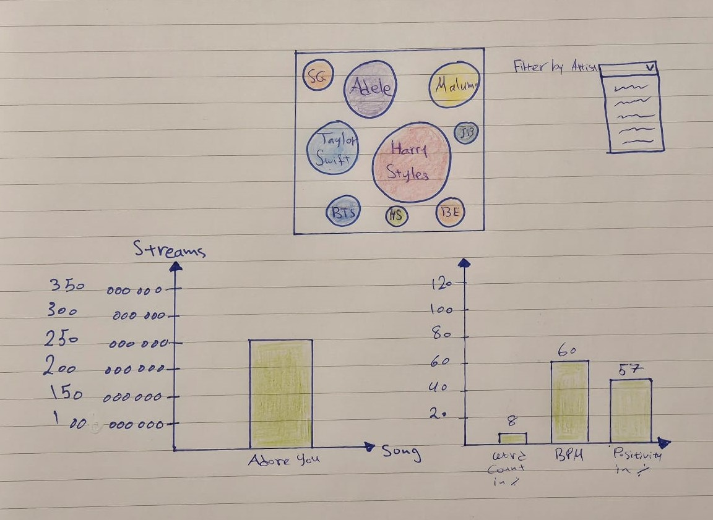

DAVI Project
What’s Hot on Spotify: Song Popularity Insights
Background Information
This project explores global music consumption trends using Spotify's "Top Songs 2023" dataset.
The goal of this project is to analyze patterns in music consumption
by examining various musical attributes such as beats per minute (bpm),
positivity (valence), stream count in spotify and word
count. By analyzing these factors, we aim to uncover patterns that define what makes a song popular worldwide.
The findings will offer insights into the role of song characteristics in driving user engagement on streaming
platforms like Spotify.
Data Source
The dataset, "Top Spotify Songs 2023," was sourced from Kaggle. It contains comprehensive details,
spanning 24 columns, including track names,
artist information, beats per minute (BPM), positivity (valence),
streams, and release date information.
The dataset is highly rated on Kaggle for its comprehensive coverage of various song attributes,
making it the perfect source for our analysis.
You can access the dataset here:
Kaggle Dataset: Top Spotify Songs 2023
Data Visualization
Old Sketch Overview:
The sketch shows a scatter plot with data points representing different songs, where the y-axis likely represents popularity (such as stream count or other metrics), and the x-axis could represent a timeline (e.g., year or release date). The second chart displays the stream count over the years. In the middle, we see various filters, and by applying each filter, we can view the energy, danceability, and BPM of the selected song.
New Sketch:
The initial sketch shows a design where the bubble chart represents the stream counts of various artists. Each bubble is sized according to the number of streams, in this sketch artists like "Harry Styles" and "Adele" having larger bubbles. The chart also includes a filter that allows users to select an artist, which updates the visualization accordingly. Below the bubble chart, two bar charts display additional song attributes: one for the stream count of a selected song and another for the song’s attributes such as word count, beats per minute (BPM), and positivity (valence).
Bubble Chart: Top 30 Songs
The bubble chart visualizes the stream counts of the top 30 songs on Spotify. Users can filter by artist, which updates the chart to display the specific artist's streams. The size of each bubble corresponds to the number of streams for a song, with larger bubbles representing more popular tracks. In the final version, this chart is interactive, allowing users to explore stream data and gain insights into which songs have the highest popularity.
Visual Design Choices
In designing this dashboard, we focused on creating a user-friendly interface that allows easy interaction with the visualizations.
We utilized the following design principles:
1. Interactivity: Users can filter data by selecting an artist, then clicking on a song.
Once a song is selected, the two bar charts update to display its details, such as streams, BPM, positivity, and word count.
2. Clarity: We opted for clear and simple visualizations, such as bar charts and bubble charts, which provide immediate insights.
3. Consistency: The color scheme and layout are consistent across all charts and visual elements, ensuring a cohesive experience.
4. Data-Ink Ratio: One of the core principles we followed in the visual design of this project is Data-Ink Ratio,
a concept introduced by Edward Tufte. This principle emphasizes minimizing non-data ink (such as decorative elements or excessive chart embellishments)
to ensure that the visual display is as efficient and meaningful as possible. In other words,
the focus should be on the data itself, without distractions from unnecessary graphical elements.
In our visualizations:
Bubble Chart: The chart uses simple, clear circles (bubbles) where the size directly corresponds to the stream count of each song.
The design avoids unnecessary clutter and allows the data to take center stage.
The interactions (such as filtering by artist) are also designed to be intuitive and streamlined.
Bar Charts: The bar charts for stream counts and song attributes (BPM, positivity, etc.) are designed with minimal decoration.
The axes are clearly labeled, and the bars are easy to interpret.
There are no excessive colors, gradients, or gridlines that would detract from the focus on the data.
References
The following resources were instrumental in developing this project:
Datasets:
Kaggle Dataset: Top Spotify Songs 2023
Logo:
Spotify Llogo (Spotify_Primary_Logo_RGB_Green.png)
Coding Support:
For general coding questions, we reached out to ChatGPT for assistance.
We also used W3Schools for the basics of HTML and CSS.
Team
Marco Mathis
B.Sc. in Wirtschaftsinformatik
Mitarbeiter Qualitätsentwicklung
Major: Data Engineering & Data Science
Nouf Alqahtani
B.Sc. in Wirtschaftsinformatik
I.BSCWl_F22.2101
Major: Data Engineering & Data Science